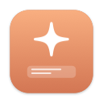

Приложение для строки меню macOS
AI Hub Bar
Ваши AI-инструменты, лимиты и проекты — в один клик из строки меню Mac.
%Лимиты Claude перед глазами — сессия 5 часов и неделя, с прогнозом, когда закончатся.
✋Ни один агент не ждёт зря — все сессии Claude Code на Mac, «Разрешить» / «Отклонить» прямо из уведомления.
▶AI-команды для ваших проектов — готовые наборы для кода, видео, текстов, исследований и маркетинга.
◐Под себя — профили из модулей, у каждого своя панель и своя строка меню.
⌘ Разработчик ▾↻ ⚙ ? ⏻
Поиск: сессии, проекты, команды…
Лимиты
42%
Сессия
через 2 ч 14 мин
18%
Неделя
сброс Вт 9:00
✓ До сброса хватит при таком темпе
Сессии
shop-app
хочет запустить npm testРазрешить Нет
blog
правит header.tsx · +42 −712 мин
api
в фоне · пишет тесты31 мин
Проекты
shop-appPR #12 ✓
apiCI упал
Коротко
Пульт для работы с AI
AI Hub Bar не заменяет Claude, Codex и другие AI-инструменты. Он следит за ними, запускает их за вас и показывает состояние всего в одной небольшой панели под ✦ в строке меню. Без иконки в Dock — не мешает.
%
Лимиты AI
Лимиты Claude на 5 часов и неделю — кольцами, с отсчётом до сброса и прогнозом. Рядом сами появляются Codex, Copilot, Gemini CLI, Cursor, OpenRouter и расход по API.
✋
Сессии агентов
Все сессии Claude Code на Mac — в Терминале, в приложении Claude, в фоне: что каждая делает прямо сейчас и насколько заполнен её контекст.
▶
Проекты и команды
Ваши проекты и их состояние. Раскройте проект и запустите команду: следующий шаг, своя задача, хуки для ролика, вычитка, конспект источника…
◐
Профили
Разработчик, Видео, Тексты, Исследования, Маркетинг или свой. Профиль выбирает модули, их порядок и свою строку меню.
▦
Календарь
Дедлайны, публикации и контент-планы из папок проектов, с напоминаниями. Перетащили запись на другой день — файл обновился.
⌘
Инструменты Mac
Модули по желанию: Ресурсы Mac, Не спать, Быстрые команды, Быстрые переключатели, История буфера и Заметки.
Работает с теми AI, что у вас уже есть
Агенты, найденные на Mac, и модели по API с вашим ключом:
Claude CodeOpenAI Codex CLIGemini CLIAntigravity CLIGitHub Copilot CLICursor CLI
Anthropic APIOpenAI APIGoogle GeminixAI GrokDeepSeekMistralOllamaLM StudioOpenRouter
Блок лимитов и список сессий сделаны для Claude Code с подпиской Claude. Всё остальное — проекты, команды, календарь, инструменты Mac — работает и с другими агентами, и с моделью по API.
AI Hub Bar — обзор2
Лимиты
Сколько осталось — и на сколько хватит
Больше не нужно гадать, дотянет ли сессия до вечера. Лимиты видны прямо в строке меню и в первой карточке панели.
Подписка Claude
- Сессия 5 часов и неделя — кольца с цветом по уровню: зелёный до 50 %, оранжевый до 80 %, красный выше.
- Отсчёт до сброса и прогноз по последним 30 минутам: «до сброса хватит» или «хватит до ~16:40».
- Прогноз на неделю со столбиком на каждый день: «неделя кончится Сб 04:56 при таком темпе».
- Расход по проектам: доля каждого проекта и самая тяжёлая сессия — за сессию, сегодня и неделю.
- Недельные лимиты по моделям и дополнительный расход, если они есть в тарифе.
Уведомления без навязчивости
- Одно уведомление за окно на 50 / 80 / 95 % (настраивается) и когда лимит восстановился.
- У самого лимита фоновые задачи встают на паузу и сами продолжают после сброса.
- Позже → После сброса лимита ставит следующий шаг проекта на момент обновления сессии.
- Каждый вид уведомлений можно ограничить или выключить.
Другие AI-сервисы
Под кольцами Claude сами появляются другие сервисы, как только они найдены на Mac или сохранён ключ: лимиты Codex, премиум-запросы GitHub Copilot, квота Gemini CLI, Cursor, кредиты OpenRouter и расход OpenAI / Anthropic API. Команды по API считают токены; есть месячный бюджет с уведомлениями на 80 % и 100 %.
Лимиты
67%
Сессия
через 2 ч 14 мин
34%
Неделя
сброс Вт 9:00
Хватит до ~16:40 при таком темпе
Неделе до сброса хватит
Codex5 ч 22% · неделя 9%
Copilotосталось 212 / 300
OpenRouterосталось $14.20
API за месяц$3.80 из $20
Расход по проектам · сегодня
shop-app48%
blog31%
api21%
В строке меню — то, что выберете вы: число, кольцо или полоска, отсчёт до сброса, ждущие сессии, ближайший дедлайн, процессор и память.
AI Hub Bar — обзор3
Сессии Claude Code
Все агенты на Mac — в одном списке
Claude в пяти терминалах, в приложении и в фоне — AI Hub Bar показывает всех и сразу говорит, когда кто-то ждёт вас.
Видно, чем занята каждая сессия
- Проект, worktree, задача, длительность и состояние: работает, в фоне, ждёт ответа, готово, ошибка.
- Текущее действие словами — «правит LimitsView.swift», «запускает npm test». Тихо 10 минут — строка становится оранжевой.
- Что изменилось с начала сессии: файлы и +/− строк из git; клик — список файлов.
- Заполненность контекста от 70 % и одно предупреждение на 90 %, пока Claude не сжал историю.
- Показать выводит нужную вкладку Терминала или окно приложения Claude.
Ответ без переключения окон
- Когда Claude просит разрешение, у уведомления и строки сессии появляются «Разрешить» / «Отклонить».
- Вы не у Mac? Тот же запрос придёт в Telegram с кнопками. Засчитывается первый ответ.
Фоновые задачи, которым можно доверять
- Если Claude уже работает в папке, новая задача получает свой git worktree.
- Фон работает по явному списку разрешений: без push в main, без force push, без удаления, без чтения секретов.
- На ночь ставит следующий шаг в ночную очередь; утром — одна сводка, как всё прошло.
- Журнал, «Остановить», лимит времени и сообщение в Telegram со ссылкой на PR по окончании.
Сессии
shop-app ждёт
хочет запустить npm testРазрешить Нет
blog
правит header.tsx · 6 файлов +42 −712 мин
api · worktree cb-auth
контекст 85 %48 мин
docs · в фоне
запускает swift testЖурнал
landing
тихо 14 мин1 ч 05
tools
готово · открыт PR #7✓

Claude ждёт · shop-app
Разрешить Bash: npm test?
ОтклонитьРазрешить
Сессии приходят от небольшого hook в настройках Claude Code. Он только пишет файлы состояния на Mac и никогда не меняет то, что делает Claude.
AI Hub Bar — обзор4
Профили, проекты и команды
Не только для разработчиков
Профиль — набор модулей под один вид работы. Начните с шаблона, ответьте помощнику на пару вопросов — и меняйте что угодно потом.
| Шаблон | Проект — это | Команды, например |
|---|
| Разработчик | git-репозиторий | Следующий шаг, Своя задача, Завершить — по CLAUDE.md / AGENTS.md проекта |
| Видео | папка на ролик | хуки, версия для Shorts, описание с таймкодами, заголовки, проверка фактов, перевод |
| Тексты | папка на текст | редактура, вычитка, другой тон, сократить, SEO, нарезать на посты |
| Исследования и учёба | папка на тему | конспект источника, цитаты со ссылками, сводная таблица, пробелы, план |
| Соцсети и маркетинг | кампания или площадка | посты под площадки, реклама, A/B-заголовки, контент-план на неделю |
| Утилиты Mac | — | только инструменты Mac |
| Свой | любая папка | свои команды с подстановками {проект}, {файл}, {язык} |
Команды ничего не затирают
- Результат — всегда новый файл в папке проекта.
- Модели по API получают главный файл проекта; ответ записывает AI Hub Bar.
- Claude Code работает с правами профиля: только файлы проекта, файлы + поиск в интернете или полный доступ к коду.
- Другие агенты открываются в Терминале, задача — в буфере обмена.
Сравнить и упорядочить
- Сравнить запускает одну команду в двух-трёх сервисах и показывает ответы рядом.
- Этапы (идея → сценарий → монтаж → готово) и метрики для каждого проекта.
- Маленькая карточка проекта в каждой папке: Этап, Дедлайн, Главный файл — читается и правится руками.
- Несколько профилей сразу, переключение вверху панели; профилем можно поделиться файлом
.claudepult.
Для разработчиков
- Состояние репозитория: ветка, незакоммиченное, PR с цветом CI.
- Уведомление, когда CI у PR покраснел или позеленел.
- Шапка STATUS.md (Stage / Now / Next) в раскрытом проекте.
- Worktree проекта и безопасное удаление влитых.
- Открыть в Терминале, Finder, GitHub или другом агенте.
- Завершить: проверки, коммит, push и PR руками Claude.
AI Hub Bar — обзор5
Календарь и инструменты Mac
Сроки на виду, Mac под рукой
Даты живут в файлах проектов, а не в очередном приложении. Плюс несколько мелких инструментов для Mac, которые иначе ставят по отдельности.
Календарь
- Ближайшее в панели: 7 дней по всем профилям, просроченное — красным.
- Окно месяц или неделя, у каждого профиля свой цвет.
- Перетащите запись на другой день — дата перепишется в её файле. Двойной клик по дню — новый дедлайн или строка контент-плана.
- Контент-план — обычная Markdown-таблица: дата, время, площадка, тема, статус, файл.
- Напоминания за 2 часа, за день или за 3 дня — по желанию и в Telegram.
Пн
Вт
Ср
Чт
Пт
Сб
Вс
3
4Reels #12
5
6Статья
7
8
9
10Дедлайн
11
12Shorts
13
14v1.2
15
16
Модули по желанию
Ставятся в Настройки → Модули. Каждый профиль решает, показывать ли их и что внутри.
▤
Ресурсы Mac
Процессор, память, графика, диск, сеть, батарея и самые прожорливые приложения — с уведомлениями, когда Mac тяжело. Процессор и память можно вынести в строку меню.
◔
Не спать
Mac не засыпает, пока работает Claude, заданное время, от сети, с монитором или пока открыты нужные приложения. Есть и в Пункте управления. Системные настройки не трогаются.
↯
Быстрые команды
Свои кнопки для скриптов, Быстрых команд, ссылок и папок — из панели или поиска ⌃⌥C.
◑
Быстрые переключатели
◐Тёмная
▭Иконки
⏏Диски
⌧Замок
⧉
История буфера
Всё, что вы копировали, с поиском и закреплением того, что нужно снова и снова.
✎
Заметки
Быстрая заметка прямо в панели — сохраняется Markdown-файлом, который принадлежит вам.
AI Hub Bar — обзор6
Везде на Mac
Доступен отовсюду
Панель — центр, но AI Hub Bar есть и в строке меню, и на рабочем столе, и в Пункте управления, и в Быстрых командах, и в Telegram.
Строка меню — как вам удобно
Готовые наборы или свой: лимиты числом, кольцом или полоской, отсчёт до сброса, ждущие сессии, ближайший дедлайн, процессор, память, свободный диск. Порядок — перетаскиванием, с живым предпросмотром. Наведите курсор — увидите сводку.
Поиск ⌃⌥C
Из любого приложения: найдите сессию, проект, команду или сохранённый промт и нажмите ↵. Запрос в неправильной раскладке («ыгкм») тоже находится.
Виджеты и Пункт управления
Виджеты «Лимиты Claude» и «Сессии и проекты» для рабочего стола и Центра уведомлений; переключатель «Не спать» на macOS 26+.
Быстрые команды и Siri
Действия «Лимиты Claude», быстрая команда по имени и поиск — собирайте из них свои автоматизации.
Окно Claude Code
Все CLAUDE.md и AGENTS.md с поиском и правкой, MCP-серверы с переключателем. Сохранённые промты подставляют {проект}, {ветка} и {файл}.
Telegram и итоги недели
Завершённые задачи, лимиты, изменения PR и CI и запросы разрешений — в Telegram. По воскресеньям — итоги недели по проектам.
Приватность по умолчанию
- Ни сервера, ни аккаунта, ни слежки. AI Hub Bar общается только с AI-сервисами, которыми пользуетесь вы.
- Ваши файлы уходят только в тот сервис, которым вы запускаете команду.
- API-ключи хранятся в Связке ключей macOS — никогда в логах и экспорте настроек.
- Вход Claude читается из Связки ключей при каждом обновлении и нигде не сохраняется.
- Входы Gemini и Cursor читаются, только если вы разрешили, — по отдельности.
- Открытый код под лицензией MIT — каждую строку можно прочитать на GitHub.
AI Hub Bar — обзор7
Начать
Пять минут — и всё работает
Нужен Mac с macOS 14 или новее и хотя бы один AI-сервис: Claude Code с подпиской, другой агент или ключ API.
Установка
- Скачайте
.dmg со страницы GitHub Releases.
- Откройте его и перетащите AI Hub Bar в «Программы».
- Запустите. macOS скажет, что не может проверить разработчика, — закройте сообщение.
- Системные настройки → Конфиденциальность и безопасность → «Всё равно открыть». Только один раз: дальше приложение обновляется само.
Первый запуск
- Экран приветствия проверит, чего не хватает: AI-сервис, hook для сессий, уведомления, автозапуск.
- Импортируйте файл
.claudepult — или выберите шаблон.
- Отметьте, что будет в панели, и укажите папку с проектами.
- Любой шаг можно пропустить: всё меняется потом в Настройки → Профили.
Говорит на вашем языке
Интерфейс и всё, что пишет AI Hub Bar, — шаблоны, промты, карточки проектов, контент-планы — на 13 языках. Язык берётся из системы или выбирается в Настройки → Основные.
РусскийEnglishУкраїнськаEspañolPortuguês (Brasil)FrançaisDeutschItalianoPolski日本語한국어Bahasa Indonesiaالعربية
Обновления
Приложение раз в день проверяет новые версии и ставит их в один клик. Настройки → Основные → Обновления.
Чистое удаление
Снимите hook в Настройки → Claude Code, выйдите, удалите приложение и его папку с данными — все пути есть в руководстве.
Собрать самому
Xcode и XcodeGen, затем scripts/build-and-install.sh в папке репозитория.

github.com/OlehDemishev/ClaudePult
Скачать, руководство, исходный код и вопросы. Бесплатно и с открытым кодом под лицензией MIT.
AI Hub Bar — обзор8